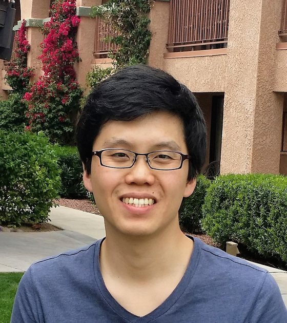

Stars that lose their temper
A small red star twists its own magnetic field until it snaps, and for a few minutes it can double in brightness. How often that happens depends on how old the star is — so a flare is also a clock.

Research Associate Professor · Astronomy Research Center, Seoul National University
I am an observational astronomer working in time-domain and multi-messenger astronomy. I build the software behind wide-field surveys — photometric pipelines, spatio-temporal databases and real-time transient systems for SkyMapper, KMTNet and the 7-Dimensional Telescope — and use them to catch stars flaring, pulsating and colliding. Then I take their spectra to find out why.
I led the first public data release of KMTNet's southern survey (KS4 DR1, 2026), and in 2017 I was on the SkyMapper team that chased GW170817 and caught AT2017gfo — the first optical counterpart of a gravitational wave. I am currently also a Visiting Fellow at RSAA, Australian National University.
Four connected lines
A small red star twists its own magnetic field until it snaps, and for a few minutes it can double in brightness. How often that happens depends on how old the star is — so a flare is also a clock.
Blue Large-Amplitude Pulsators swell and shrink faster than a coffee break, and to exist at all they must have lost almost their entire outer envelope. Nobody agrees yet on how. I found one nobody expected, and now I am collecting the rest.
A modern survey photographs the whole southern sky again and again, and every night reports millions of things that changed. I build the pipelines and databases behind that — and teach machines which handful is worth waking someone up for.
When two neutron stars merge, the shudder in spacetime arrives first and the glow follows within hours — somewhere in a patch of sky the size of a fist. Finding it before it fades is a race, and I have been running it since GW170817.
Programmes I lead — 7DT, 7DS, BOES, Gemini
A search for ultraviolet variability in SkyMapper DR4 turned up more than a hundred candidate Blue Large-Amplitude Pulsators in southern fields — outside the crowded, dust-choked bulge where nearly all the known ones live. Several 7DT units watch the same star at once in g and r, and their interleaved exposures stitch into one continuous light curve: two or three nights of half-hour blocks pin a period to about 0.1% down to nineteenth magnitude.
Hα emission is the clearest sign that a small star is magnetically active, but the big samples come from spectroscopy — slow, and almost all northern. 7DS takes a low-resolution spectrum of everything in its footprint, 400 to 900 nm at once, so the Hα excess can be read straight off the medium bands. With repeat visits, quiet activity separates from flares on timescales of days to months.
Flares are usually modelled as a single 10,000 K glow, but the biggest ones come apart during the decay: the blue continuum stays near 8,000–11,000 K while the red end falls to 3,500–5,500 K, and nobody agrees what the cool red part is. Rubin will report these flares by the thousand but only in snapshot pairs of filters. The plan is to catch the alert and turn 7DT on it within minutes, then track the full 400–900 nm shape — and Hα with it — all the way down.
Photometry tells you a flare happened; a spectrum tells you what happened to the gas. With the echelle spectrograph at Bohyunsan we take spectra fast enough to watch the chromospheric lines evolve through a single energetic flare — Hα and the Balmer series filling in and then draining away, minute by minute, while the continuum does something else entirely. Those line profiles are where an ejected filament would show up.
A period alone will not tell you where a pulsator came from — the surface will. Binary mass transfer, a merger, and surviving a supernova each leave a different temperature, gravity and set of abundances behind. So the confirmed pulsators go to Gemini for spectra, and the spectra go through non-LTE model atmospheres. Only about 15% of the roughly two hundred known BLAPs have measured atmospheric parameters at all.
Next
Where my work meets the survey
LSST will report millions of changes a night, and most of what I care about — flares, pulsators, kilonovae — arrives in that stream as a handful of points that mean nothing on their own. My interest is the step after the alert: deciding in real time which events are worth a telescope, and then getting a second instrument onto them fast enough to matter.
Concretely, I am building a path from the Rubin alert stream to minute-cadence medium-band follow-up with 7DT — cross-matching alerts against K–M dwarf catalogues, deriving per-event colour temperatures, and setting trigger criteria for the extreme, multi-hour events worth chasing. The same machinery applies to orphan kilonovae found by their single-epoch SED, without a gravitational-wave trigger.
I have built this kind of system before: the SkyMapper alert follow-up pipeline through LIGO/Virgo O3, the KS4 public data release, and the 7DT survey-management portal.
Affiliations
★first or corresponding author · full list on ADS
2026
I am always glad to hear from students who like the idea of staring at the same patch of sky for years, and from anyone who wants to point a telescope at something the moment it changes.